AI Laterality Challenge
This project studies how Vision-Language Models interpret
left vs. right orientation in medical images.
Try it yourself
- Open your favorite AI model (ChatGPT, Gemini, Claude, etc.)
- Upload one of the images below
- Ask the model:
You can come up with your own prompt or use this:
"You are an expert clinician specializing in human anatomy. Determine the laterality of the human part shown in the photo. Explain your reasoning."
Test Image 1
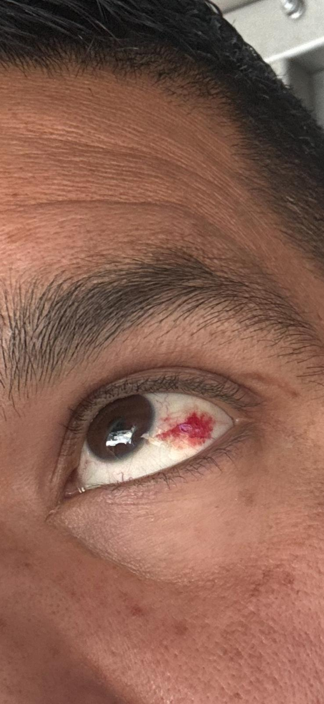
Test Image 2
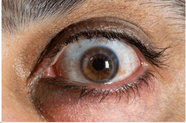
Test Image 3
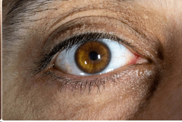
Test Image 4a
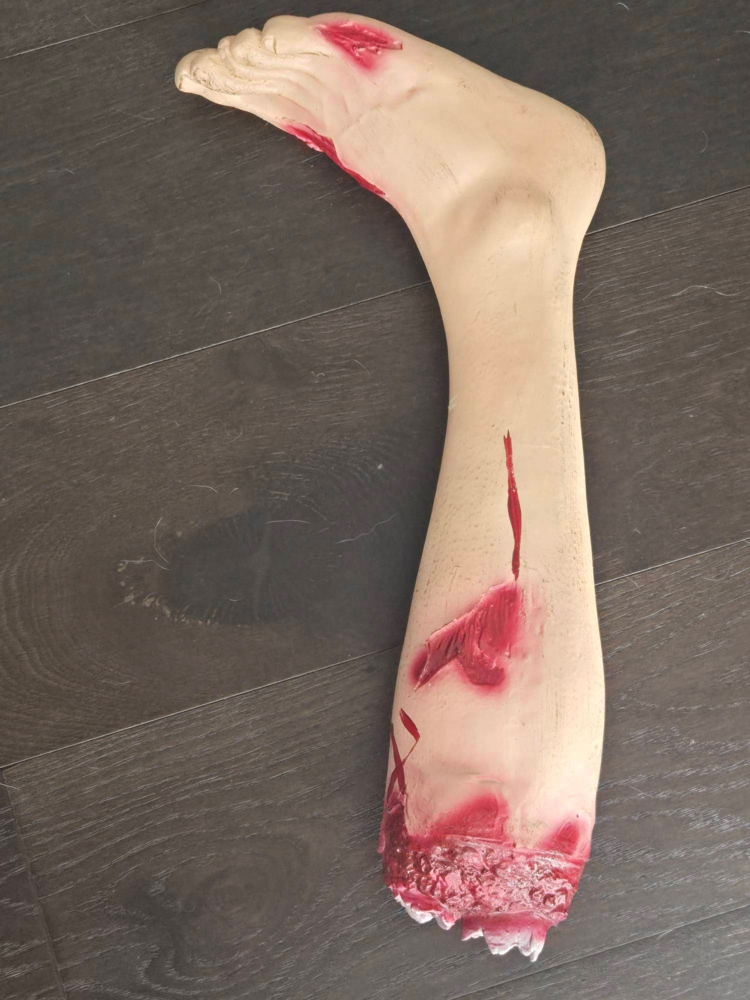
Test Image 4b
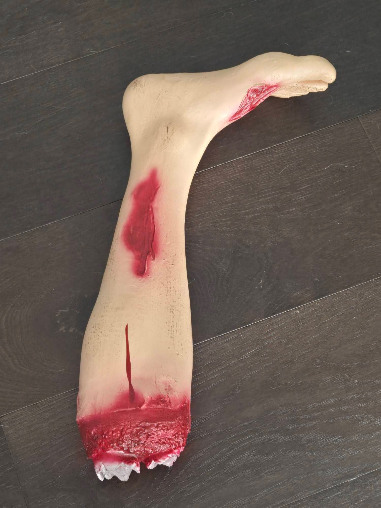
Test Image 5
Test Image 6
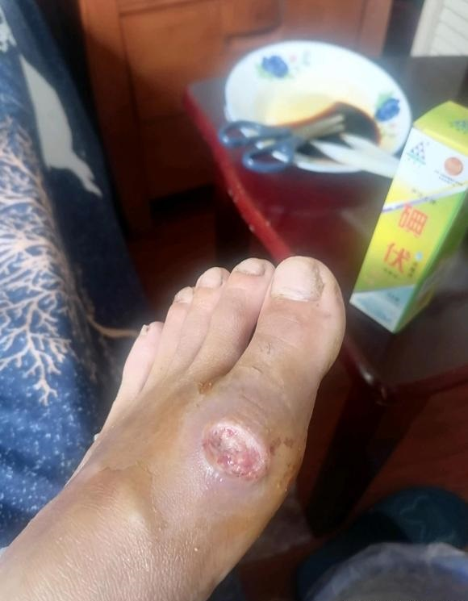
Mirrored Image 6
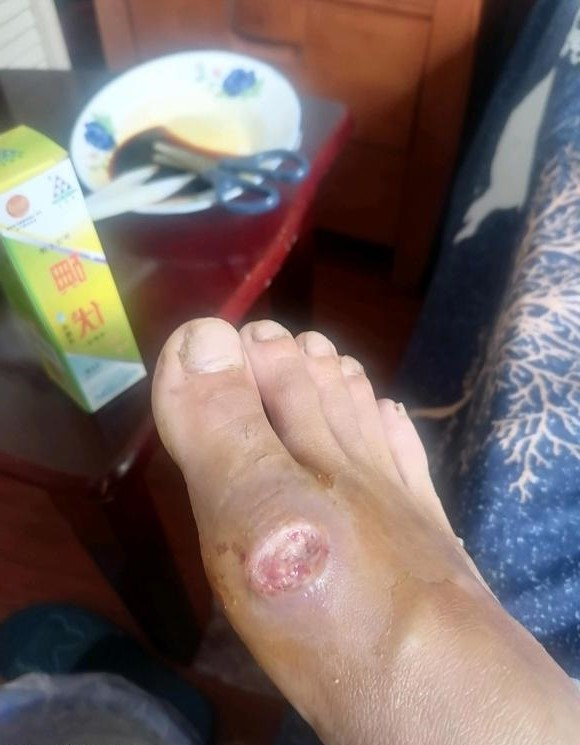
Test Image 7
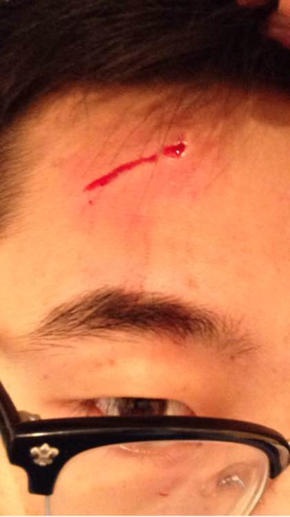
Mirrored Image 7
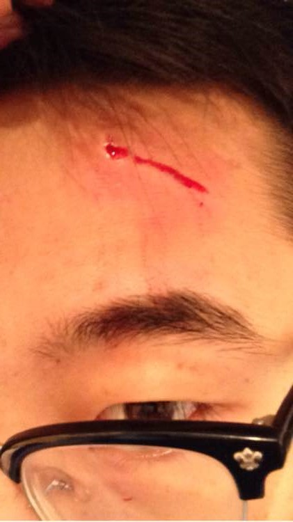
Test Image 8
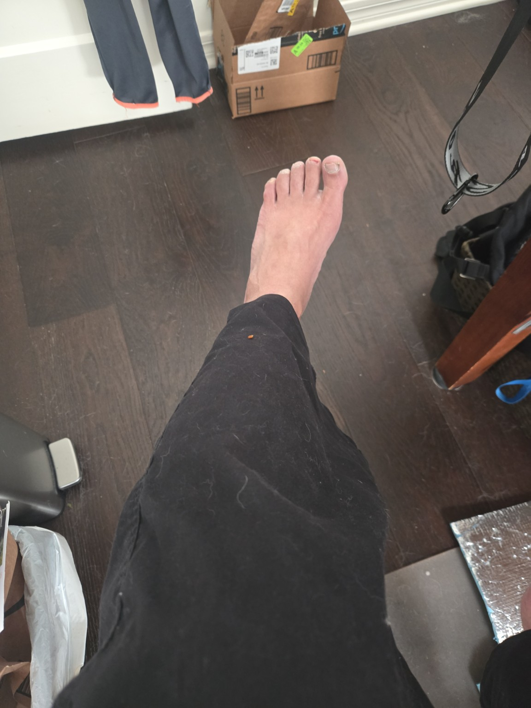
Mirrored Image 8
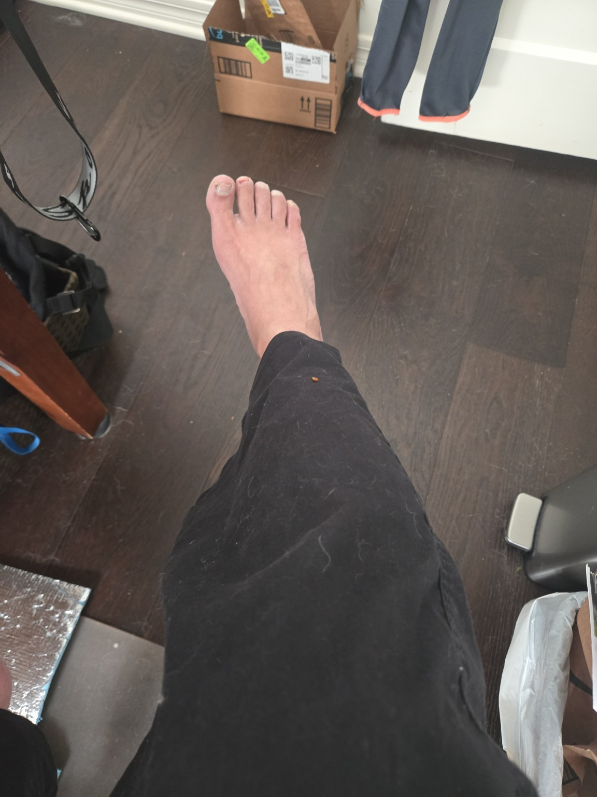
Do the answers remain consistent?
This experiment explores spatial reasoning reliability in multimodal AI systems.
Project: WoundCorder – Consumer LiDAR Volumetry and Spatial Stability Testing of Vision-Language Models